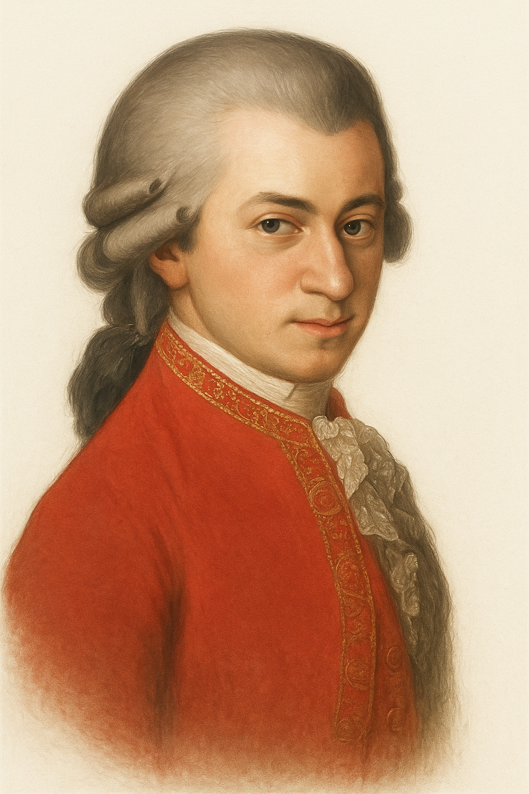
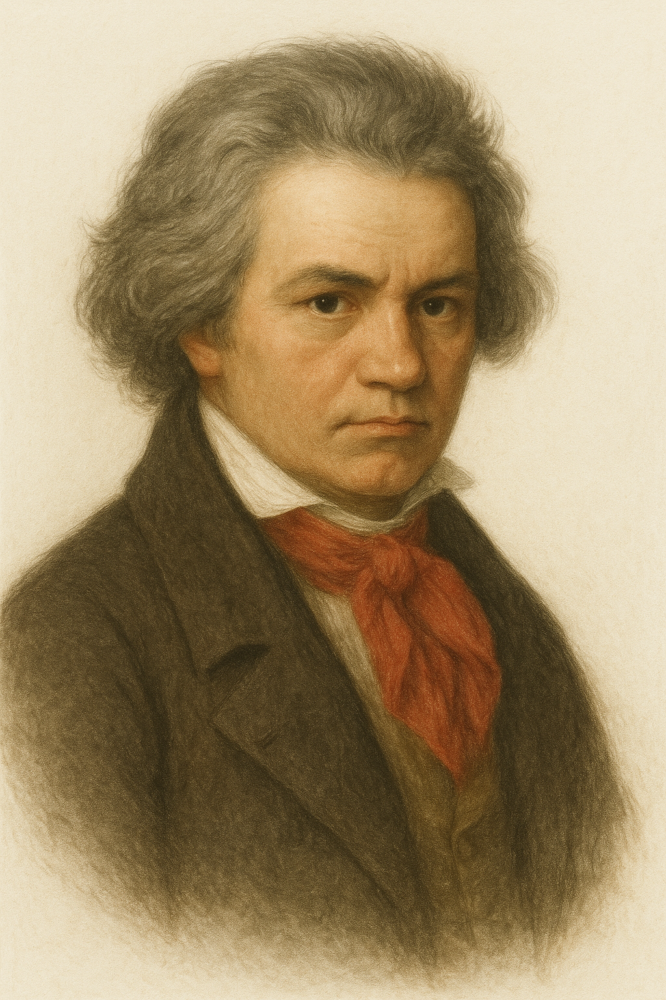
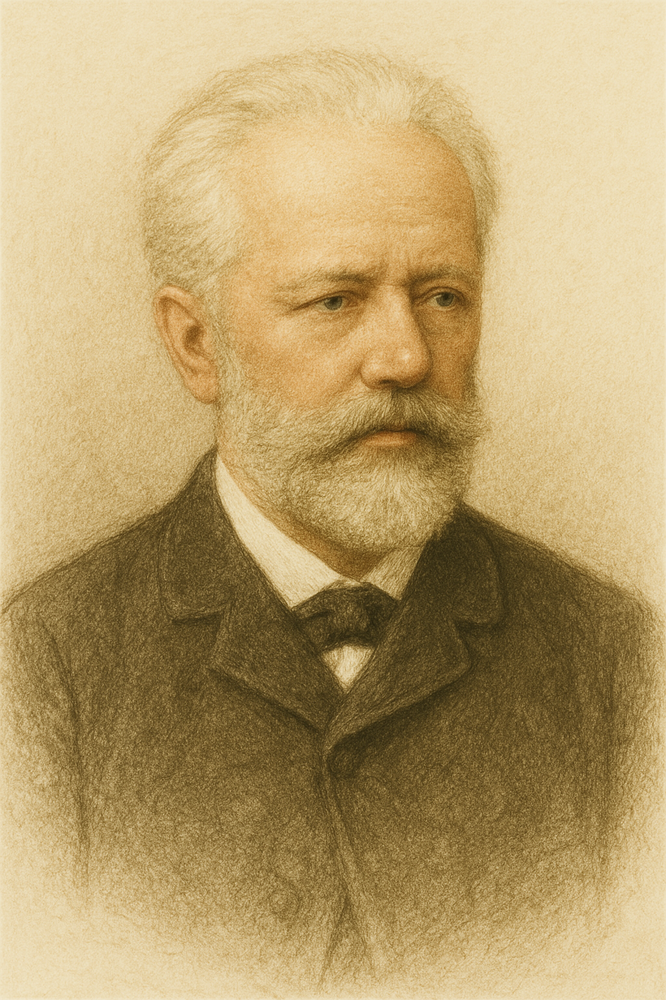

Mozart
Beethoven
chopin
Tchaikovsky
TOPに戻る

光の粒のような旋律で、 聴くたびに心の表情を変えていく。 その音楽は永遠を重たく語らず、 指先にそっと輪をかけるように愛を刻む。
2台のピアノのためのソナタ ニ長調 K.448
狂おしき一日、あるいはフィガロの結婚
交響曲第40番 ト短調 K.550
交響曲第41番 ハ長調 K. 551《ジュピター》
Dialogo
Giocoso
Agitato
Maestoso

深い沈黙と激しい感情の間で、 彼は人生そのものを音に刻んだ。 苦悩の先にこそ、 揺るがぬ意志と誓いがあることを その旋律は力強く語り続ける。
ピアノソナタ第14番 嬰ハ短調 作品27の2『幻想曲風ソナタ』(月光)
バガテル第25番 イ短調 WoO 59(エリーゼのために)
交響曲第6番 ヘ長調 作品68「田園」
交響曲第7番 イ長調 作品92
Sotto voce
Grazioso
Idillico
Cantabile
想いはいつも、繊細な旋律にある。 静けさの中で響く音は 聴く者の心にそっと触れ、 深い余韻だけを残していく。
ノクターン 第2番 変ホ長調 作品9-2
ノクターン 第8番 変ニ長調 作品27-2
ピアノ協奏曲 第1番 ホ短調 作品11
ピアノ協奏曲 第2番 ヘ短調 作品21
Legato
Sospirando
Dolcissimo
Animato

感情はやがて旋律となり、 愛として溢れ出す。 喜びも悲しみも抱えたまま、 人生を生き抜く情熱が その音楽には宿っている。
バレエ《白鳥の湖》作品20
バレエ組曲「くるみ割り人形」作品71a
幻想序曲《ロメオとジュリエット》
ピアノ協奏曲 第1番 変ロ短調 作品23
Leggiero
Gioioso
Appassion
Con fuoco